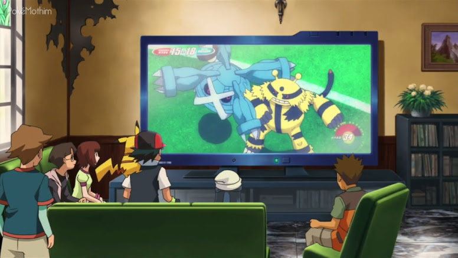

Pokémon - Zoroark: Mestre das Ilusões
🟡 Nome Japonês: Pocket Monsters Diamond & Pearl the Movie: Supreme Ruler of Illusions: Zoroark
🟡 Nome Americano: Pokémon: Zoroark: Master of Illusions
🟡 Nome Brasileiro: Zoroark: Mestre das Ilusões
Data de lançamento:
🎞 Japão: 10 de julho de 2010
🎞 Estados Unidos: 05 de fevereiro de 2012
🎞 Brasil: 10 de março de 2012
História
O filme começa com o narrador falando um pouco sobre o mundo Pokémon. É mostrado um treinador usando seu Donphan em uma batalha contra Ash, e após ela, o trio segue para o Centro Pokémon mais próximo. Ali, Ash, Dawn e Brock assistem juntos na TV um jogo de aquecimento da Copa do Mundo de Baccerbol (Pokémon Baccer World Cup), um jogo cujo objetivo é uma equipe de três Pokémon fazerem gols em alguns arcos flutuantes.

Disfarçada de faxineiros, a Equipe Rocket aparece e pergunta para
Brock o que estão assistindo. Brock responde que é um jogo de
Baccerbol. Ash e Dawn dizem que eles irão assistir à copa do mundo
na cidade de Crown. Em seguida, eles assistem na TV a equipe do
magnata Kodai, formada por um Raikou, Suicune e Entei. A enfermeira
Joy aparece e Brock dá em cima dela, mas é paralisado por um soco de
Croagunk.
Um Zorua e sua mãe Zoroark são transportados em um avião. Um portão
se abre e eles são cercados por Raikou, Suicune e Entei. As feras
lendárias estão sob o comando de Kodai e sua assistente, Rowena.
Kodai faz com que as feras ameacem Zoroark para que ele se
transforme em uma delas, para testar suas habilidades de ilusão. Em
seguida, Zoroark se transforma em Raikou. Zoroark encobre o lugar
com uma forte neblina, mas é apenas uma ilusão. Kodai e Rowena usam
seus relógios anuladores de ilusão e agora não enxergam as ilusões
de Zoroark.
Kodai usa novamente o seu relógio, mas dessa vez o usa para
transformar as feras lendárias em poliedros: Raikou, Suicune e Entei
são apenas ilusões criadas por esses dispositivos. Após isso,
Zoroark volta à sua forma original. Kodai manda um Ninjask capturar
Zorua e paralisa Zoroark com alguns raios para que ela não possa
proteger seu filhote. Kodai pretende usar Zorua para que Zoroark o
obedeça. Ninjask leva Zorua até Kodai por um túnel, mas Zorua
consegue escapar no meio dele. Ele escapa por um buraco no túnel e
cai no meio de um corredor. Lá, um Scizor o encurrala, mas ele usa
sua habilidade e se transforma em um Scizor. O Pokémon inseto se
confunde e Zorua consegue fugir, mas é arrastado pela corrente de ar
na parte externa da aeronave, e acaba caindo.

Um bando de Hoppip, Skiploom e Jumpluff passa por ali, e Zorua
colide com um Skiploom,. Porém, antes que alcance o chão, ele usa
sua habilidade e se transforma nesse Pokémon. Como Skiploom, Zorua
consegue flutuar, o que detém sua queda. Enquanto isso, em um jardim
da cidade logo abaixo, um portal se abre e Celebi aparece,
rapidamente sumindo de vista.
Ash e seus amigos caminham em direção à cidade de Crown. Eles se
perdem e acabam chegando a uma floresta. Em um balão, a Equipe
Rocket os observa. Zorua (Skiploom) se choca com o rosto de Jessie,
James e Meowth, fazendo-os ficar pendurados no balão. Zorua cai e
chega ao chão. Ele é cercado por um grupo de Vigoroth. Ash e seus
amigos chegam e espantam os Vigoroth, mas Zorua "fala" que não
precisava da ajuda deles. Ash e seus amigos se espantam ao saber que
Zorua pode falar usando a telepatia. Zorua diz que deseja salvar sua
mãe. Zorua mostra seu poder ao se transformar em Ash, deixando todos
impressionados.
Quando Kodai e Zoroark saem do avião, ele ordena a Zoroark que ela
mostre às pessoas suas habilidades. Kodai usa ilusões para fingir
que está com Zorua. O Celebi que estava afastado da cidade há 20
anos voa pela cidade de Crown e árvores florescem, encantando os
Pokémon da região. Zoroark se transforma em Suicune e corre pela
cidade de Crown, destruindo várias coisas e colocando medo na
população. Em seguida, se transforma em Entei, causando ainda mais
destruição. Kodai aparece na TV e diz que agora suas feras lendárias
são controladas por Zoroark. Ele pede desculpas e fala que todos
devem deixar a cidade para ficar protegidos. Zoroark se transforma
em Raikou e cobre a cidade com uma névoa, que é apenas uma ilusão.
Ash e seus amigos encontram todos evacuando a cidade de Crown e são
impedidos de entrar. Kodai fala novamente na TV e diz que ninguém
poderá entrar na cidade até que ele consiga recapturar as feras.
Zorua se transforma em Brock e sai correndo em busca de sua mãe.
Ash, Brock e Dawn seguem Zorua. Um repórter chamado Karl aparece e
diz que já tinha ouvido falar de Zorua. Ele pega na cauda de Zorua
que está transformado em Brock e o Pokémon volta ao normal.
Kodai observa Celebi em seu computador. Ele diz que já sabia que
Celebi apareceria graças à sua visão. Nesse momento, Kodai tem uma
visão. Nessa visão, ele vê Ash, Dawn, Pikachu e Karl tentando tocar
em uma ondulação do tempo que se forma perto de um relógio de
contagem regressiva. Karl, Ash, Dawn, Brock, Pikachu e Zorua vão até
a cidade de Crown por meio de uma antiga passagem subterrânea, e no
caminho Karl comenta que está investigando Kodai. Segundo o
repórter, Kodai é conhecido como o homem que pode prever o futuro e
que seria capaz de fazer qualquer coisa para conseguir o que quer.
Enquanto isso, na cidade, Zoroark encontra Zorua. Ela corre para
encontrar seu filhote mas é recapturada por Goone, um dos capangas
de Kodai. Esse Zorua era apenas mais uma ilusão de Kodai.
Quando chegam a cidade, Karl percebe que ela não está destruída como
foi visto na TV. Karl diz que toda destruição deve ser uma ilusão de
Zoroark, que está sob o comando de Kodai. Junto com Ash e seus
amigos, o verdadeiro Zorua corre pelas ruas à procura da mãe. Kodai
tem outra visão. Ele vê novamente a ondulação do tempo. Ele vê
Celebi saindo de um portal, um relógio com uma contagem regressiva e
as feras lendárias correndo pela cidade. Junto de seu Shuppet e
Mismagius, Kodai sai pela cidade à procura da ondulação do tempo.
Ele pede para que Shuppet use o movimento Previsão (Foresight), mas
não encontra nada. Em seu computador, ele vê Ash e companhia
correndo pela cidade. Ele se lembra que os viu em sua visão.
Junto com Ash e seus amigos, Zorua continua à procura de sua mãe.
Zorua começa a correr na frente e acaba trombando com um Mightyena e
um Tangrowth, sendo que o Pokémon de planta consegue colocar Zorua
para dormir usando Pó do Sono (Sleep Powder). Logo é revelado que os
Pokémon pertencem a Joe, avô de Karl; e à Tammy, dona de uma
floricultura. Tammy os convida para comer um lanche em sua
floricultura, explicando um pouco sobre a cidade e sobre como ela
foi revitalizada após um incidente há 20 anos que acabou com todo o
verde do lugar. Porém, Zorua acorda e, inquieto, sai correndo à
procura de sua mãe.
Zorua corre por um jardim cheio de árvores e arbustos e é cercado
por vários Pokémon. Eles começam a atacar Zorua, mas Pikachu e
Piplup chegam e começam a lutar ao lado de Zorua. De repente, Celebi
aparece e acalma a todos. Zorua pede para que Celebi o ajude a
procurar sua mãe. Celebi, Zorua, Pikachu e Piplup saem do jardim à
procura de Zoroark.
Quando os treinadores tentam seguir os Pokémon, acabam sendo
encurralados e capturados por Kodai. Rowena tenta invadir o
computador em que todos os dados de Kodai ficam. Ao adivinhar a
senha (VISÃO), ela vê alguns dados sobre antigas profecias e se
apressa a copiá-los para seu microcomputador. Em uma das telas, ela
vê uma caixa e vai até o local da câmara para ver o que é. A caixa
se transforma em uma jaula e lá ela encontra Ash e seus amigos. Ela
solta seus cabelos e revela ser uma jornalista que está investigando
Kodai.
Rowena liberta Ash e seu amigos, e todos fogem em um bote. Rowena
explica que Kodai está à procura da ondulação do tempo, que aparece
sempre que Celebi visita a cidade. Ela diz que a ondulação do tempo
é um ponto focal temporário que coleta energia do tempo. Essa
ondulação dura apenas um dia e fornece energia suficiente para que
Celebi viaje no tempo. Ela explica que Kodai deseja essa energia
para prever perfeitamente o futuro. Há 20 anos, Kodai tocou na
ondulação do tempo que se formou na cidade de Crown, ganhando o dom
de ter visões do futuro. Mas a mesma energia fez com que todas as
árvores e plantas da cidade morressem.
Celebi, Zorua, Pikachu e Piplup continuam a busca por Zoroark,
subindo em uma grande árvore nos arredores da cidade. Mas Kodai
aparece e manda seus Pokémon atacarem Celebi. Zorua usa sua
habilidade de ilusão, mas é atacado e a ilusão se desfaz. Zoroark
consegue escapar da aeronave na qual estava preso e encontra os
verdadeiros cães lendários, que possuem uma coloração brilhante
(Shiny). Kodai tenta ferir Celebi para obrigá-lo a criar uma
ondulação do tempo. Zorua pula no rosto de Kodai, fazendo com que
ele caia. Kodai se revolta e os ataca, deixando Celebi inconsciente.
Na hora em que Kodai iria capturar Celebi, Pikachu o impede e Kodai
manda seus Pokémon atacarem Pikachu e Piplup. Eles caem da árvore em
que estavam, mas são salvos por dois Togekiss. Ash, Karl, Rowena e
companhia aparecem. Eles resgatam Celebi e os outros Pokémon e
fogem.
Kodai fica frustrado ao ver a fuga, mas sabe exatamente o que Rowena
irá fazer e manda um objeto espião atrás deles. Achando que era um
inimigo, os três cães lendários começam uma luta contra Zoroark. O
Pokémon tenta despistar os cães lendários com suas ilusões, mas é
cercado por eles. Karl leva Ash e seus amigos até a oficina de seu
avô. Tammy e Joe explicam para Ash e seus amigos que Entei, Suicune
e Raikou estão atacando Zoroark com o objetivo de proteger a cidade.
Rowena explica que a ondulação do tempo aparecerá próxima de um
relógio, e que Karl foi até todos os relógios da cidade mas não
encontrou nada. Joe diz que há um relógio que Kodai provavelmente
não foi. É um relógio em contagem regressiva para a copa do mundo,
que fica próximo ao estádio de Baccerbol. Kodai escuta toda conversa
pelo seu pequeno aparelho espião e parte rumo ao relógio.
Ash e seus amigos percebem o aparelho espião de Kodai e partem rumo
ao relógio também, pegando o atalho subterrâneo para chegar
primeiro. Zoroark continua sua luta com os cães lendários e é
cercado por eles novamente. Ele usa uma ilusão e prende os cães
lendários em cristais azuis. Karl e Rowena chegam e Rowena usa seu
relógio de pulso para acabar com a ilusão que está prendendo os
cães. Vários Pokémon selvagens que vivem na cidade aparecem para
tentar explicar aos cães lendários que Zoroark não é uma ameaça.
Ash, Brock e Dawn seguem rumo ao estádio. Kodai aparece em um carro
junto com Goone. Kodai manda seu capanga batalhar com eles antes que
cheguem ao estádio, e Brock e Dawn ficam para deter Goone enquanto
Ash vai ao estádio com Celebi, Zorua e o Bronzor de Karl. Kodai
parte rumo ao estádio junto com seu Shuppet e sua Mismagius também.
No meio do caminho, Ash e Kodai se encontram. Pikachu começa uma
batalha com Mismagius, e Ash manda Celebi chegar à ondulação do
tempo antes que Kodai chegue lá. Kodai para a batalha quando vê
Celebi indo até a ondulação do tempo. Enquanto isso, Dawn e Brock
continuam a batalhar para ganhar tempo. Quando estavam prestes a
perder, Zoroark aparece e derrota Goone.
O Shuppet de Kodai começa uma batalha com Celebi. Celebi é atingido
por um raio e se transforma em Zorua. Os Pokémon de Kodai atacam o
Bronzor e o derrotam. Zorua tenta revidar, atacando Kodai e mordendo
seu relógio, mas o magnata captura o Pokémon noturno com uma
extensão mecânica vinda de sua luva. O grito do Zorua chama a
atenção de Zoroark, que parte para aquele local. Ash, Pikachu e o
verdadeiro Celebi chegam ao relógio. Quando estavam há poucos metros
dele, Kodai aparece e Mismagius os paralisa com um ataque. Zoroark
aparece e tenta atacar Kodai, mas para quando Kodai mostra Zorua
ferido em suas mãos.
Kodai tortura Zorua com alguns choques, e seu Shuppet ataca Zoroark
com um raio. Kodai vai até o relógio onde está a ondulação do tempo.
Com suas luvas, Kodai toca a ondulação do tempo, drenando a energia
que sai do portal. Ash diz que se ele fizer isso, as árvores e
plantas da cidade irão morrer, mas Kodai responde que isso pouco
importa para ele. Uma energia negra se espalha pela cidade e todas
as árvores e plantas morrem. Mas de repente, as árvores e plantas
que morreram voltam ao normal. A energia que Kodai absorveu
desaparece e a ondulação do tempo reaparece, pois foi tudo uma
ilusão de Zoroark. Kodai diz que isso não devia acontecer por causa
de seu relógio anulador de ilusões. Mas Kodai se lembra da mordida
que Zorua deu em seu relógio anteriormente, danificando o
dispositivo.
Karl e Rowena aparecem. Ferido, Zorua se arrasta até sua mãe. Karl
manda Shuppet usar uma Bola das Sombras (Shadow Ball) nele, mas
Zoroark pula na frente e o protege, ficando ferido. Kodai usa o
aparato de suas luvas para dar um choque em Zoroark, que já estava
ferida. Zoroark consegue se livrar da corrente usando um golpe, e
Piplup ataca Mismagius, liberando Ash, Pikachu e Celebi. Mismagius
tenta atacar Celebi, mas Brock e Dawn chegam e Piplup o protege.
Pikachu ataca Mismagius e o derrota
Kodai se desespera ao perceber que será difícil tocar na ondulação
do tempo e corre até ela. Quando iria tocá-la, os três cães
lendários aparecem e cercam Kodai, que foge amedrontado. Ferida,
Zoroark desmaia. Kodai tenta fugir em sua aeronave, estacionada
dentro do estádio, mas quando estava decolando, ela desaparece.
Kodai cai dentro do estádio de Baccerbol, ficando ferido no chão. A
aeronave era uma ilusão de Zoroark, que havia a preparado antes de
desmaiar.
Zorua tenta acordar Zoroark, mas nada acontece. Todos temem o pior. Zorua cria uma ilusão, levando-os até o campo em que moram. Celebi passa pela ondulação do tempo que ali estava e logo retorna, usando o fluxo de energia para curar Zoroark. Após isso, a ilusão se desfaz. Celebi voa pelos jardins ali perto do estádio, fazendo várias flores aparecerem no local. Eles se despedem e Celebi vai embora. No estádio, Kodai vê sua conversa com Ash no telão, na qual estava falando que pouco se importa com a cidade. Essas imagens são transmitidas em toda a cidade, toda população vê e se revolta com Kodai. Em seguida, a policial Jenny leva Kodai para a delegacia. Karl, Rowena, Zorua e Zoroark partem em um navio para uma nova região, e ao se despedir, Ash promete que irá encontrar Zorua quando for lá.
Curiosidades
🟡 Esse é o único filme da série Diamond & Pearl que é um filme independente. Os outros três filmes são parte de uma trilogia envolvendo Dialga, Palkia e Arceus.
🟡 O cenário do filme é baseado em vários locais na Holanda e na Bélgica, como Magere Brug, Rio Amstel, Kinderdijk e Bruxelas.
🟡 Esse filme marca a primeira vez que todas as três feras lendárias aparecem ao mesmo tempo no anime, e pela primeira vez Raikou recebe um papel de protagonista em um filme.
🟡 Este filme também marca a primeira vez que Pokémon lendário Shiny aparece nos filmes (no caso, Raikou, Entei e Suicune). A Equipe Rocket inclusive comenta que eles parecem um pouco diferentes do que a ilusão criada por Zoroark.
🟡 Este filme termina com a Equipe Rocket sendo os últimos personagens a aparecer antes dos créditos, um padrão encontrado nos primeiros filmes, e pausado após o filme Celebi: Voz da Floresta.
🟡 Professor Rowan, Rhonda, Johanna, Paul, Zoey, Barry, Nando, Kenny, Conway, Ursula, Cynthia e Palmer fazem aparições rápidas nos créditos do filme, junto com os líderes de Ginásio de Sinnoh que Ash lutou e a Elite dos Quatro. A maioria deles apareceu com um de seus Pokémon.
🟡 Ethan, protagonista das séries Gold e Silver, faz uma participação especial no início do filme com um Donphan, que usa na batalha contra Ash. Isso faz com que este seja o segundo filme em que Ash batalha contra um Donphan logo no início. A primeira foi no filme Mewtwo Contra-Ataca.
🟡 A Oficial Jenny vista neste filme tem um símbolo de estrela em seu chapéu, que era o mesmo símbolo usado pela Jenny em Viridian City, a primeira Oficial Jenny a aparecer no anime. A primeira arte oficial da Oficial Jenny também tem essa estrela em seu chapéu.
🟡 Esta é a primeira aparição de um Pokémon da Quinta Geração, antes da série Best Wishes;
🟡 Durante a cena em que Celebi voa em torno da cidade, quando acalma os Pokémon que estão brigando, e quando revive Zoroark, versões refeitas da melodia da Voz da Floresta, do filme Celebi: Voz da Floresta, podem ser ouvidas.
🟡 Nas primeiras transmissões do Cartoon Network, todo o prólogo foi cortado, com o filme começando imediatamente na sequência do título. Este corte foi feito pelo Cartoon Network sem a permissão da The Pokémon Company International, e foi restaurado em transmissões futuras, após 16 de Fevereiro de 2011.
🟡 O boné de Karl tem uma imagem de um Woobat nele. Este Pokémon só tinha sido revelado oficialmente quatro dias antes do lançamento deste filme.
🟡 O termo Baccerbol vem de uma fusão de basquete com futebol.
🟡 Durante a partida de Pokémon Baccerbol, o locutor anuncia o time de Kodai como o Nimbasa Legends. Nimbasa City é uma cidade que aparece na Geração V, sugerindo as possíveis origens de Kodai;
🟡 Em sequência ao título, logo depois de Zoroark: Mestre das Ilusões ser exibido, uma parte da música de Lostlorn Forest pode ser ouvida.
🟡 Este filme marca a estreia de um sistema de escrita criada para o anime, que começaria a ser utilizado de forma consistente a partir da série Best Wishes em diante.
Erros
🟡 Nos créditos, a boca do Rhyperior de Palmer fica com a mesma cor de seu chifre e da parte superior do corpo do Pokémon.
🟡 Quando Kodai veicula seu pedido de desculpas pelo ataque das feras lendárias à cidade, Peg (a garota de cabelo roxo fã de Magnemites) aparece com olhos num formato oval e com pupilas visíveis, sendo que durante o restante do filme esse detalhe não aparece.
🟡 Quando Ash pergunta a Kodai o que ele quer dizer sobre não permitir que eles fiquem em seu caminho, as presilhas de Dawn ficam na mesma cor do cabelo da garota.
🟡 Dentre os Pokémon que usam Rajada de Sementes (Bullet Seed) ao tentar libertar Celebi, está um Kricketune, que não consegue aprender tal golpe nos jogos.
Edições
🟡 Na versão original, a senha que protege os arquivos de Kodai é "Ondulação do Tempo", e na versão americana é alterada para "VISION". Essa alteração foi devido a "Ondulação do Tempo" possuir seis caracteres em japonês, mas onze na língua inglesa.
🟡 Quando Zorua é atingindo pelo pó do sono, ele murmura "Eu não estou com sono!" na versão oriental, mas no Ocidente ele fica em silêncio.
🟡 Quando Zorua é capturado por Kodai, no original japonês ele diz "Maa... não pude fazer nada", enquanto na versão ocidental ele comenta que "não me resta muito tempo".
🟡 Houve uma troca na música de encerramento: no Oriente é tocada a faixa "Ice Cream Syndrome", enquanto no Ocidente é tocada uma nova música, "I Believe in You".